Software Engineer & Data Analyst
I'm all in on AI.
I'm a software engineer and data analyst who builds practical tools with AI. Professionally, I write Python and SQL to create internal websites and check numbers are matching production. On nights and weekends I create personal projects around card games - scrapers, image processors, and a bilingual Android app. All built with an AI augmented workflow.
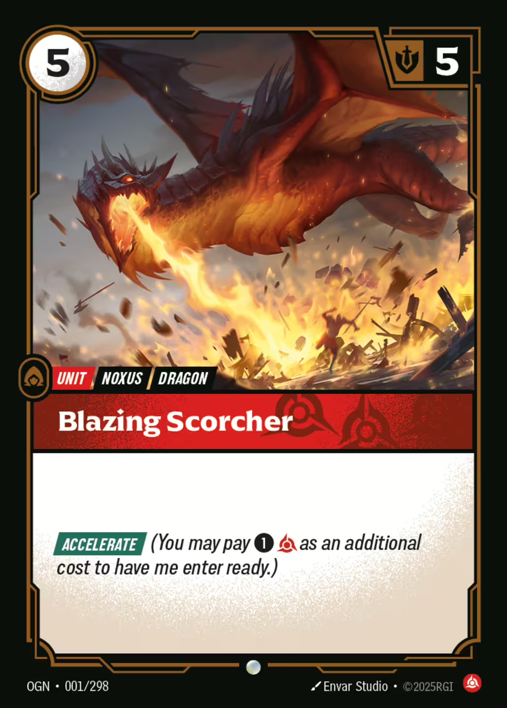
My favourite card game that inspires most of these projects
Riftbound is a social TCG (trading card game). A digital version was created by one of the community members. The card art was copyrighted, so the designer had players download it themselves. When the person managing the main art link went on holiday, 1000+ players had no card images. I stepped in to scrape the art and icons from official sources and published them on archive.org. These also included extra icons for the card to function well inside the game.
archive.org — 8000+ views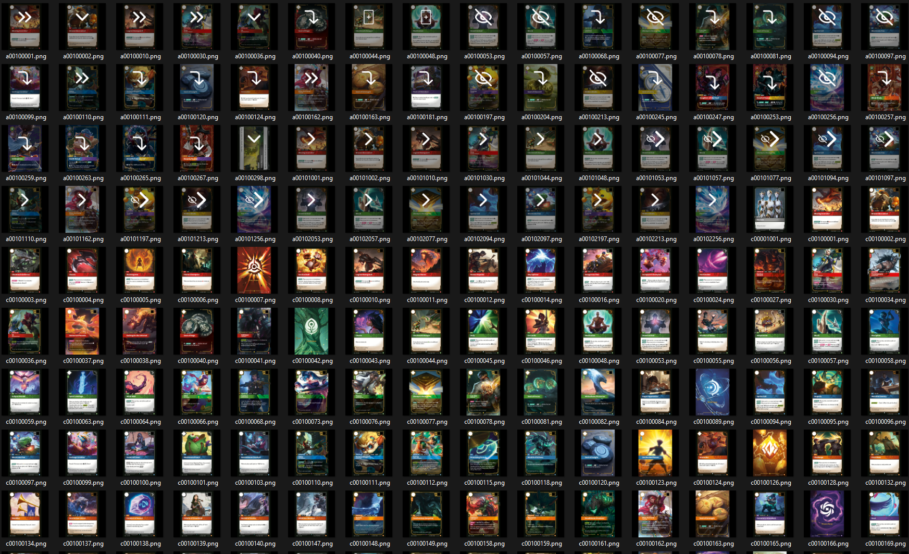
All scraped card art + icon variants
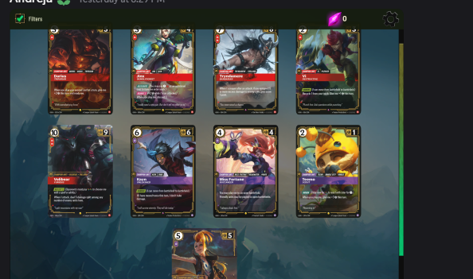
Cards rendered in Pixelborn
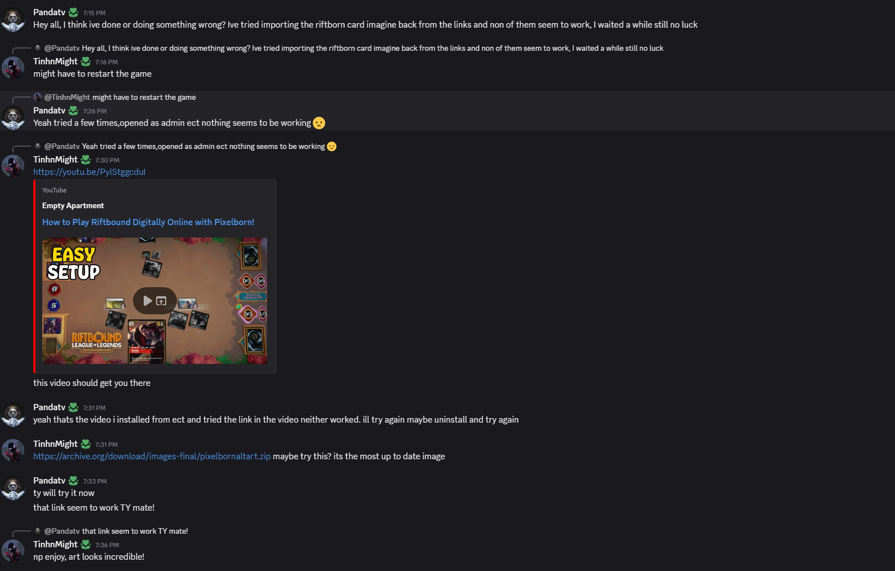
Community using my archive.org link
A daily card guessing game for the Riftbound TCG, inspired by Wordle and LoLdle. Features two game modes: Classic (guess by comparing attributes like domain, cost, might, type, and set) and Art (identify the card from progressively revealed artwork). Built a Python scraper to auto extract card data from Riot's card gallery, supporting both Origins and Spiritforged sets (488+ cards). Uses Firebase for anonymous auth, global guess distributions, and hosting.
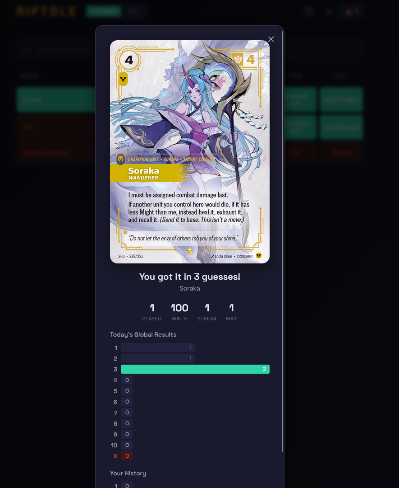
Successful guess result
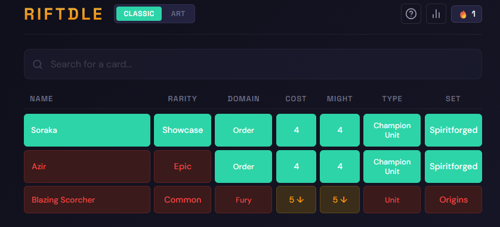
Classic Mode - Guess by card attributes
Players in Riftbound are able to use mixed language decks, this means some cards that players play will be in Chinese. The app provides instant EN to CN translation and vice versa: type a card ID (bottom left of the card) and a translated version of the card will appear. There's also a camera tab for ease of use, take a photo of a card, ML Kit OCR reads the ID, and the translation pops up automatically. This is an offline-ready app with 500+ card images in each language.
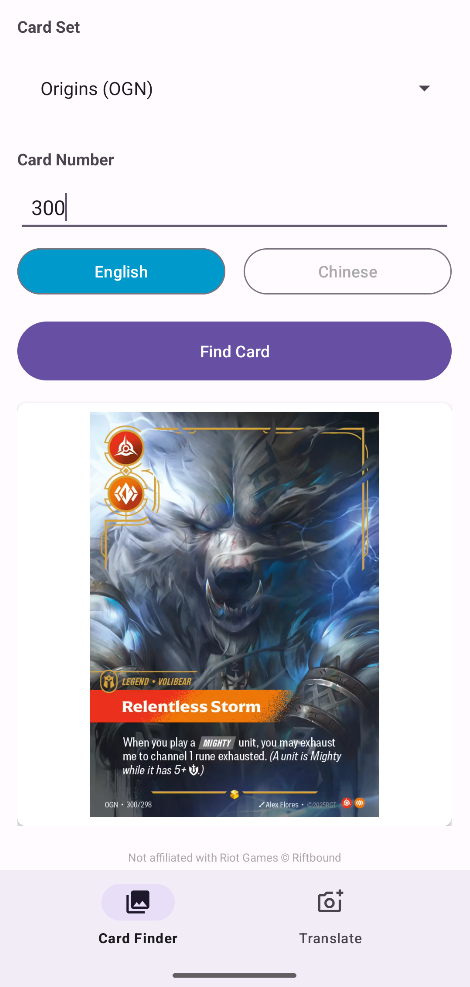
English Relentless Storm card
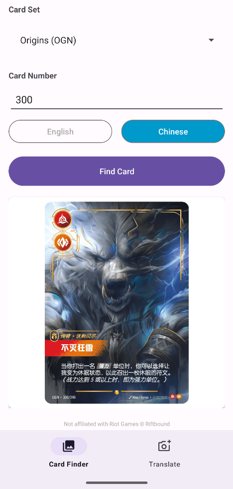
Chinese Relentless Storm card
A platformer game where you collect cherries and reach the flag at the end. Built following YouTube tutorials, then went further into the gamespace by adding traps, hidden pathways, and challenges that made it my own.
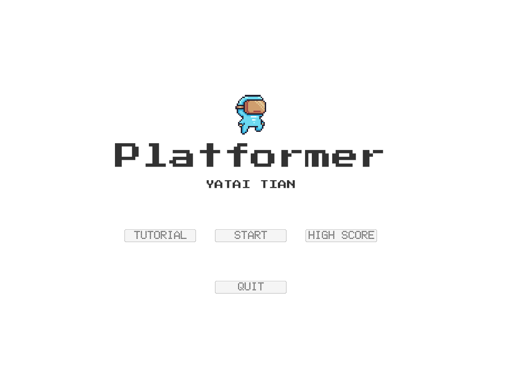
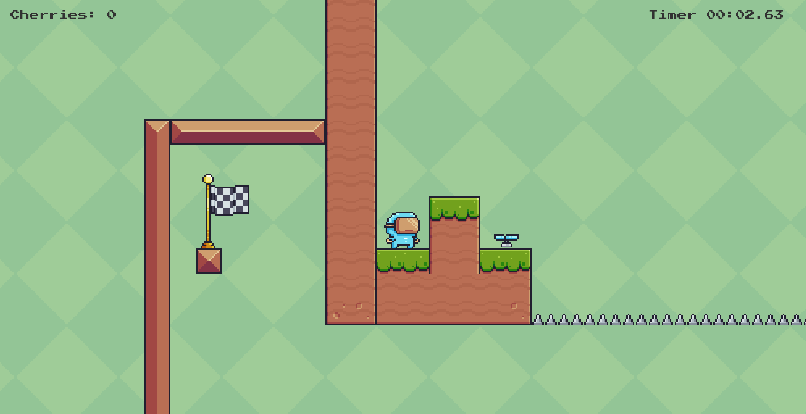
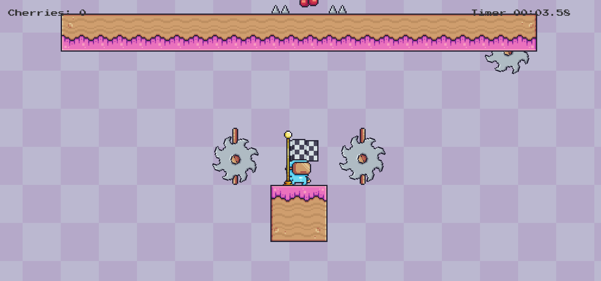
Inspired by Elden Ring (game of the year 2022), I wanted to build a simpler version. Learned how characters get animated, class systems for player and AI, and state machines through YouTube tutorials. This is extremely fun to build and please enjoy the demo of the current progress.
My final year dissertation on integrating meteorological data into local spatiotemporal graph neural networks to improve traffic flow prediction. The research explored whether weather features like rainfall, temperature, and wind could enhance forecasting accuracy beyond what spatial and temporal patterns alone could achieve.
Read the full dissertation (PDF)